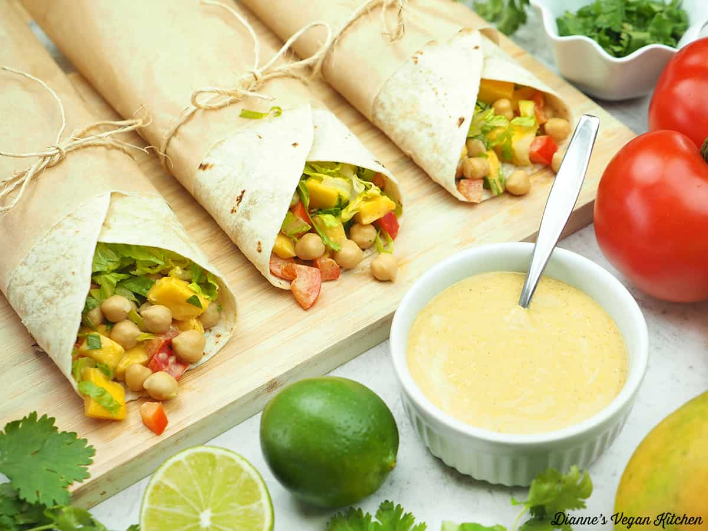

Quick & Easy Vegan Recipes

Video
Vegan Chickpea Wrap
A protein-rich wrap made with mashed chickpeas and fresh veggies.
- Mash chickpeas with vegan mayo, lemon juice, and seasonings.
- Add diced cucumber, bell pepper, and onion.
- Spread on a whole wheat tortilla and roll it up.
- Serve chilled or slightly warmed.
Video